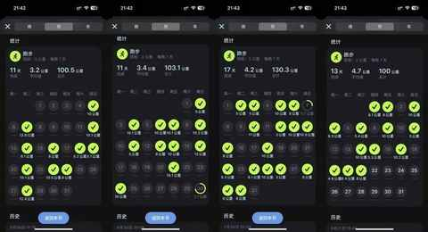
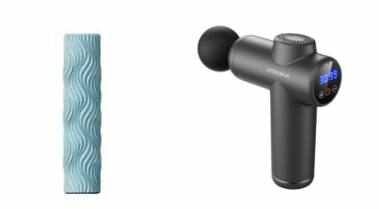
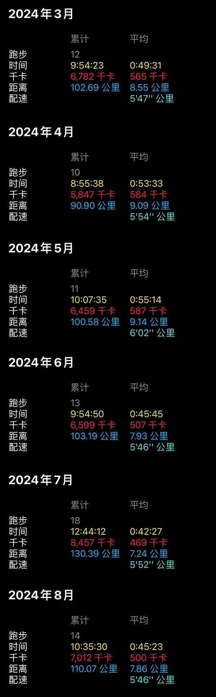
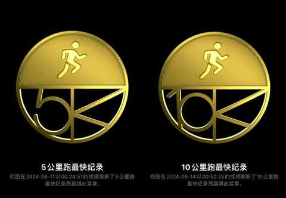

连续 4 个月跑量过 100km之后，对跑步又有了 5 点新感受……
积累跑量的过程并没有那么枯燥，一般会边听播客边跑，如果是听音乐会主要听凤凰传奇的，他们的歌特别适合用于后半程想提速的时候。
跑步相较骑行，是完成没有摸摸鱼滑行的可能性，必须迈开腿，挥舞双臂才能不断向前，每一步都是源于自身的努力。

虽然最近几个月的温湿度不是很友好，但还是坚定的选择路跑，没有去用跑步机，去感受风，感受从白天到黑夜的过程也能让整个运动的过程更放松。
随着投入在跑步上的时间逐步增多，对跑步也有了 5 点新的感受：
一、最重要的事，让跑步成为日常之一

当一件事情成为日常之后，就不再是额外的负担，去完成的时候心态也会好很多，能坚持做下去的概率更高，就和吃饭一样很难被忘记。
二、要注意休息， 及时拉伸和放松肌肉
休息和运动同样重要，如果频繁的出现肌肉酸疼的情况不仅仅会让每天的状态很差，也会增加受伤的风险。

准备一个类似的泡沫轴+颈膜枪，足以放松全身的肌肉。
拉伸与放松的教程在 B 站与小红书都能检索到很多优质内容，根据自身情况去选择，一定要亲自实践才知道哪个视频哪些动作更适合自己。
三、不在安全上疏忽大意
1️⃣ 跑的过程中注意观察路面，过路口前后左右都看看
2️⃣ 尽量不逆向跑步，跑的时候贴近边缘
3️⃣ 如果夜跑，最好身上的装备有反光材料（鞋子、袜子、T 恤、短裤、帽子等等），增加被识别到的概率，一身黑色很酷但被动安全系数偏低
4️⃣ 跑步过程中觉得身体不适，就先停一停休整休整
四、瓶颈期总会到来，且没那么容易突破

仔细看上图 从 3 月 到 8 月 的数据就能发现：
1️⃣ 配速没有提升，没有到 540 以下
2️⃣ 单次距离下降，从超过 8km 到不到 8km
3️⃣ 每月跑 100km 以上没有那么难
虽然是在瓶颈期，但在积累跑量的过程中也还是完成了一些小目标，例如 5km 跑到 25 分钟里面，10km 低于了 55 分钟：

希望下半年能把 10km 跑到 50 分钟以内，5km 到 24 分。
五、不过度关注装备，所需装备就那几样
有感于某一段时间过于关注装备，也买了一些多余的东西，后面发现要么是不必要，要么是已经有替代品。
例如：骑车用的眼镜就很适合跑步用，篮球袜也能用来跑步等等。
1️⃣ 跑步鞋（有两双换着穿就足够，一双鞋基本上能跑 1000km）
2️⃣ 跑步袜（按喜好选择即可，有很多优质产品选择）
3️⃣ 速干 T 恤（按喜好选择即可，有很多优质产品选择）
4️⃣ 速干短裤（最好后面有口袋能放手机）
5️⃣ 帽子（最好带反光条，主要用来吸汗和遮阳）
6️⃣ 墨镜（白天跑步的时候可能需要）